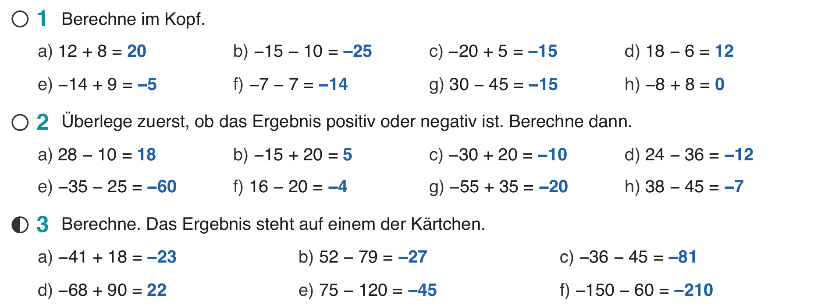
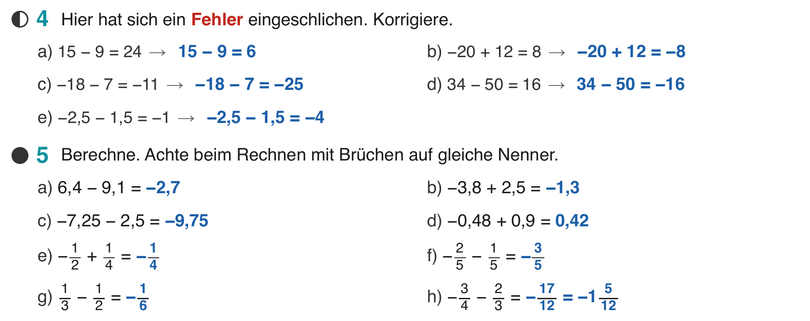
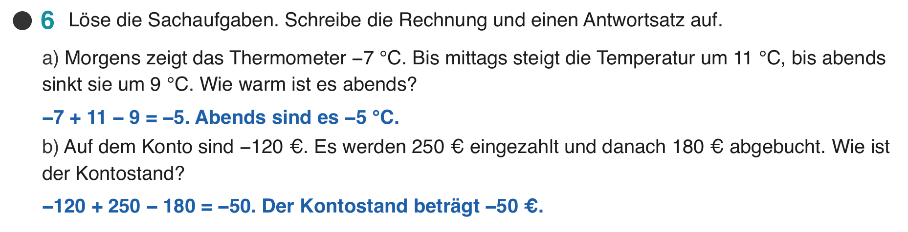

Klasse 7c, Mathematik, Mo 28.09.2026, IF-Stunde (zwei Halbgruppen, beide Male gleich)
| Nichts. | |
| Digital | Folien-PDF dieser Stunde in Notability. Datei: Mathe 7c – Woche 3 – 1 Minus üben.pdf |
| Sonst | Strichliste mit Nr. 1 bis 6, je Halbgruppe eine Spalte. Die Schüler brauchen das Arbeitsblatt (HA), das Übungsheft und einen Stift in anderer Farbe. |



Rechne möglichst geschickt. Wie würdest du vorgehen?
−17 − 3 = −20 und 36 + 4 = 40, also −20 + 40 = 20.
Die Zahlen samt Zeichen umsortieren, dann gehen die Rechnungen glatt auf. Am Donnerstag lernen wir, wie diese Rechengesetze heißen.
Die leeren Zahlengeraden stehen auf Folie 4, du zeichnest die Bögen live ein. Bleibt an der Tafel, kommt nicht ins Merkheft.
Die Regeln zum Addieren und Subtrahieren stehen seit letzter Woche im Merkheft.
| 1 | a) 20; b) −25; c) −15; d) 12; e) −5; f) −14; g) −15; h) 0 |
| 2 | a) 18; b) 5; c) −10; d) −12; e) −60; f) −4; g) −20; h) −7 |
| 3 | a) −23; b) −27; c) −81; d) 22; e) −45; f) −210 |
| 4 | a) 6; b) −8; c) −25; d) −16; e) −4 |
| 5 | a) −2,7; b) −1,3; c) −9,75; d) 0,42; e) −14; f) −35; g) −16; h) −1712 = −1512 |
| 6 | a) −7 + 11 − 9 = −5, abends −5 °C; b) −120 + 250 − 180 = −50, Kontostand −50 € |